The Radicoida genus of flora – technically a type of woody plant with bioluminescence and deep roots, and currently can only be found within the HIP 87621 system.
Huge, incredibly resilient organisms that establish massive underground root systems. These roots extend several hundred meters underground, securing the host organism in place and accessing underground aquifers and nutrient sources in a wide variety of soils. The type of soil, climate and atmosphere is believed to influence certain characteristics of organisms, but key traits appear consistent. While they may share several attributes with fungi – deep roots, bioluminescence, spores, broad upper growths – they are technically a type of woody plant.
Image: Codex – Radicoida
Currently, there is only one known species of Radicoida – Radicoida Unica – which can only be found within the HIP 87621 system.
| Species Name | Vista Genomics Offer Price (Cr) |
|---|---|
| Radicoida Unica | 119,037 |
Data is correct as of 16th November 3311.
Note: From 13th November 3311 until 27th November 3311, the price offered by Vista Geonomics for Radicoida Unica samples have been increased by 8x, to 952,296 Cr.
This increase in value is due to a Community Goal being active in the HIP 87621 system, however this increase only applies for samples sold at the Exogene Sciences asteroid base in the HIP 87621 system and only while the CG is active.
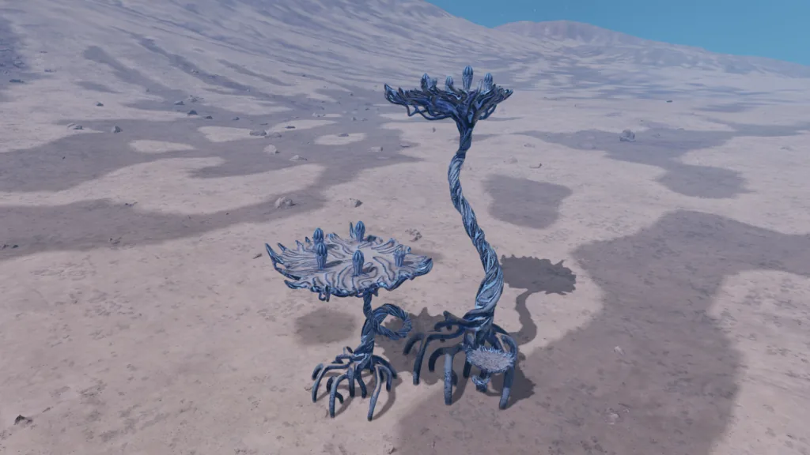
An Radicoida species which has built upon its enormous root systems to lift itself several meters into the air, secured on aerial roots. It is highly insulated against extreme temperatures and resilient in many climates. Large, broad structures in the higher reaches of this organism provide platforms for seed pods, which are capable of firing seeds incredible distances.
Image: Codex – Radicoida Unica
The Radicoida Unica species has only been found within the Permit Locked HIP 87621 system, the permit to the system was given out to Cmdr’s by the permit holder, October Consortium, on the 13th November 3311. More information concerning this can be found in the related article: A Secret to be Uncovered. A Trail to be Followed.
| Body Type: | High Metal Content / Rocky |
| Atmosphere: | Thin / Hot Thin – Carbon Dioxide (92.7 – 98.9%) |
| Volcanism: | None / Minor Silicate Vapour |
| Gravity: | 0.05 – 0.38 G |
| Temperature: | 467 – 699 K |
| Pressure: | 0.007 – 0.060 atm |
Note 1: The above information is the minimum and maximum values that are reported when the bodies are surface mapped on the 13th November 3311, as such, it may not match what displayed in the Local Map.
Note 2: As Radicoida Unica has only been discovered on 4 bodies within a single system, the above information may not be accurate for it’s growing conditions.
So far, Radicoida Unica can be found in the “Biological Site” POI’s, and are classed as “Other” signals under the Locations section of the system map, rather than Biology, as such there is no Exobiology overlay available for them.
Below is a table of the known Biological Site POI’s in the HIP 87621 system which contain Radicoida Unica, along with the coordinates and approximate size of each site.
| Body | Coordinates | Site Size |
|---|---|---|
| 1 | -22.4788 / -5.0172 | Small |
| 1 | 5.4780 / -5.8847 | Medium |
| 1 | 80.7999 / 68.2981 | Large |
| 2 a | 38.5455 / 102.0038 | Small |
| 2 a | -51.1748 / 114.8399 | Large |
| 2 a | -37.1704 / -89.1629 | Medium |
| 2 a | 19.0916 / -50.8769 | Small |
| 2 b a | -8.8321 / 70.8260 | Large |
| 2 b a | -18.0296 / 122.6854 | Medium |
| 2 b a | 46.9238 / 72.6814 | Large |
| 2 b a | -10.0768 / 148.7261 | Medium |
| 2 b a | 71.9377 / 8.1711 | Small |
| 2 b a | -48.4039 / -167.4833 | Small |
| 2 b a | 33.9845 / -46.8463 | Small |
| 2 b a | 1.5105 / -66.1404 | Medium |
| 2 b a | -25.7545 / -123.2744 | Small |
| 2 b b | -1.7990 / 95.6869 | Medium |
| 2 b b | 0.3216 / 74.9205 | Small |
| 2 b b | -0.5845 / 128.3468 | Small |
| 2 b b | -8.8179 / 24.7118 | Medium |
| 2 b b | 58.2718 / -173.9599 | Small |
| 2 b b | 67.4392 / -16.9440 | Large |
| 2 b b | -26.0109 / -133.4292 | Large |
When approaching one of the Biological Site’s that contain Radicoida Unica, the first thing that will be noticed is that there is a fog cloud that completely surrounds the site(s).
The sites vary in size, classified as Small, Medium and Large. The larger the site is, the more trees that are present and the larger the radius of the fog cloud.
| Site Size | Approx. Site Radius | Approx. Fog Radius |
|---|---|---|
| Small | 320 m | 575 m |
| Medium | 465 m | 850 m |
| Large | 950 m | 1100 m |
Radicoida Unica appear to be a tree-like species, glowing with a light blue bioluminescence, it’s root system near ground level being similar in appearance to ancient Mangrove tree’s that were once present on Earth.
At its mid-portion, as the roots grow taller they begin to twist around each other forming a trunk and the top portion consisting of a Lily-pad like platform, supported by the upper trunk roots, which is where it’s seed pods can be found.
The trees vary in size, between Short, Medium and Tall.
The Shorter tree is approx. 5 m tall, does not have a root system visible above ground level, a narrow trunk, and has a small pad with no seed pods.
It should also be noted the Small trees cannot currently be sampled for Exobiology.
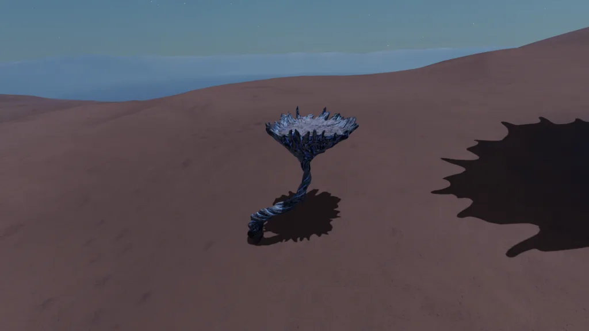
The Taller tree is approx. 50 m tall, has a large root system visible, a board trunk, however it does not have a pad and as such it also does not have any seed pods, instead, the top of the trunk currently tapers off to a top.
It should also be noted the Tall trees cannot currently be sampled for Exobiology.
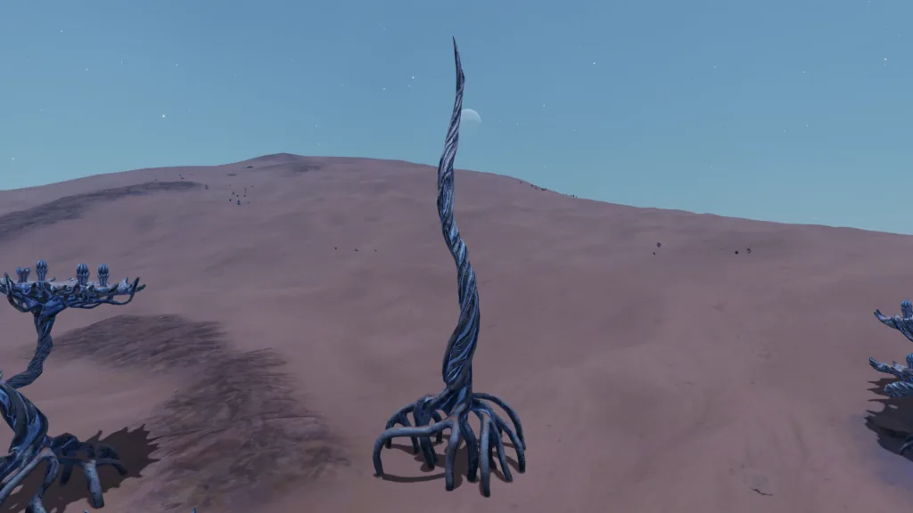
The Medium tree is up to approx. 30 m tall, has a visible root system, its trunk is around half of the diameter of the Taller tree, it will occasionally twist and coil-up, before reaching a large pad.
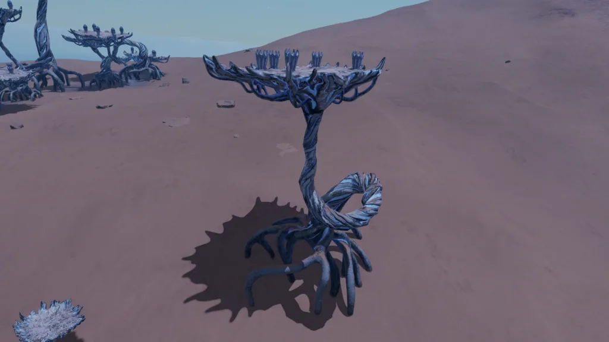
On top of the pad there are up to 5 seed pods, held in seed pod bases, however the number of seed pods present seems to vary between 0 – 5 for each medium-sized tree.
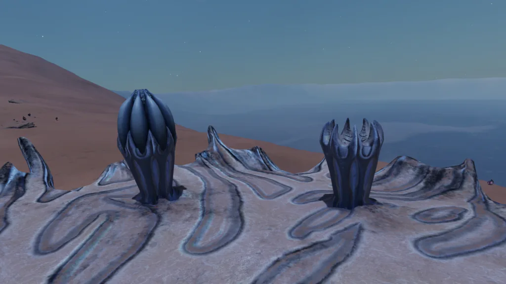
A jet of what appears to be water / steam will occasionally erupt from the pods and pod bases on top of certain tree’s, the reason why this happens and why it only happens with certain trees is currently unknown. An observation showed that the eruption seemed to occur approx. every 40-50 sec, however this may vary between pods.
Despite the codex stating that the seed pods “are capable of firing seeds incredible distances”, there have been no observations or recorded instances of this occurring.
Note: Caution should be taken when standing in close proximity to an erupting seed pod.
The root system underneath the medium-sized trees appears to be able to alter the colour of the terrain, although this does not appear to happen with every tree. The medium tree will sometimes have additional bioluminescence when near other trees.
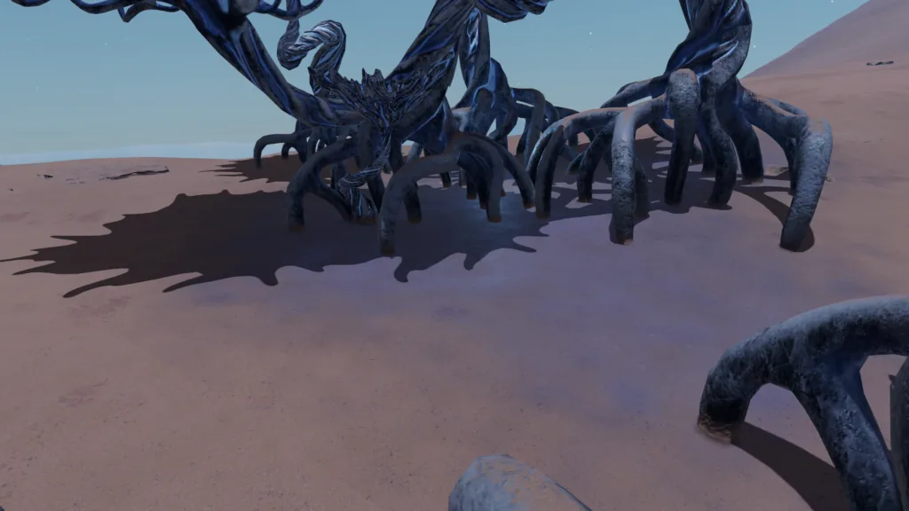
The medium-sized trees can be scanned for an Exobiology sample. The areas where samples can be taken are usually found on the Trunk, on top of Pads, and occasionally on the underneath of the Pads.
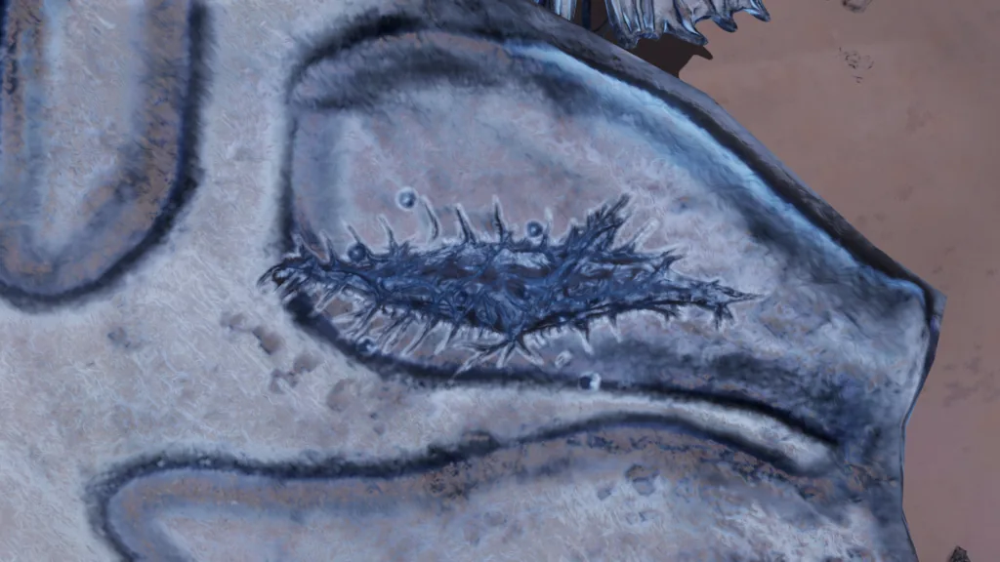
On the 20th November 3311, a new Galnet was released concerning the discovery of Radicoida Unica, stating that: “Radicoida unica can remain dormant for centuries and contains an unusually complex bio-chemical compound which may have pharmaceutical applications”.
20 NOV 3311
Speculation continues to mount around Radicoida unica, the rare exobiological discovered in HIP 87621.
Though scientific data remains tightly controlled, fragments of research are circulating among the scientific community opposed to the system’s military lockdown. The source of these research fragments is currently unconfirmed.
The source suggests that Radicoida unica can remain dormant for centuries and contains an unusually complex bio-chemical compound which may have pharmaceutical applications.
Critics argue that military control of the enclave is less about protecting a fragile discovery, and more about ensuring exclusive access to what could become the most potent biological discovery in centuries. Since the leaked reports of its unusual bio-chemical make-up, analysts note that military mobilisation has increased across the enclave with some suggesting the region could soon become a flashpoint.
It remains to be seen whether Radicoida unica’s potential merits the powers increasing their military presence in the region surrounding HIP 87621 over the past week. For now, the rumours only deepen the mystery surrounding the galaxy’s most in-demand plant.
As of the 2nd April 3312, a Galnet was released, stating that: “October Consortium has confirmed that Radicoida unica, an enigmatic flora found exclusively within HIP 87621, has entered an active reproductive phase.”
02 APR 3312
October Consortium has confirmed that Radicoida unica, an enigmatic flora found exclusively within HIP 87621, has entered an active reproductive phase.
According to their scientific teams, the plant’s dormant cycle has ended, triggering the growth of hardened ‘seed pods’ across its upper platforms. These pods hold rare biological material believed to be the main source of the species highly valued physiological effects.
Researchers say that this activation validates early theories about the plant’s sensitivity to nearby life signatures, with its bloom phase perceived as a direct response to recent studies by Commanders of the Pilots’ Federation. Sceptics noted that some Radicoida sites are yet to bloom, however.
Military and corporate restrictions are still in effect while oversight of the enclave is coordinated in line with the recent October Accords. October Consortium has therefore called upon Commanders to support a new phase of exobiological harvesting. The collected seed pods will undergo detailed analysis and biochemical synthesis to better understand their unique properties.
Exogene Sciences in HIP 87621 has been authorised as the central collection point for incoming samples, with October Consortium overseeing transfer and storage. Scientists hope this phase of data acquisition will unlock further leaps in the pharmacological applications of Radicoida unica.
Commanders are encouraged to exercise caution, as the plant continues to thrive on worlds with hazardous temperatures and volatile surface conditions.
Galnet: Radicoida Unica Begins Blooming as New Research Initiative Announced
Along with the discovery of some Seed Pods now being in an active state, it has also been noted that the Active Pod’s appear to emit a glowing light when either a Vessel or a Commander gets within approximately 75 metre’s of an Active Pod. It is currently unknown what causes this reaction.
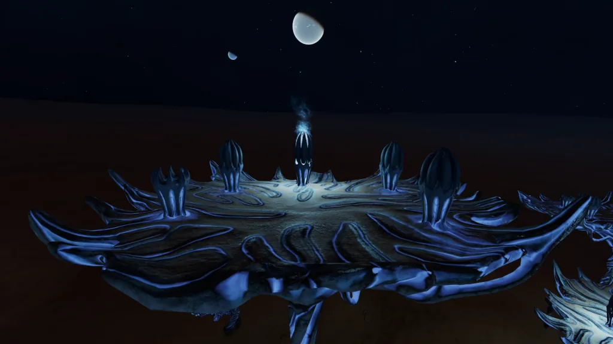
The SRV’s Radar will show the locations of Active Pod’s around the Biological Site’s, however a Ship’s Radar will not.
The Active Pod’s appear to be taller and slimmer when compared to a Dormant Pod, possibly due to the built up pressure required for the Radicoida’s seed dispersal mechanism.
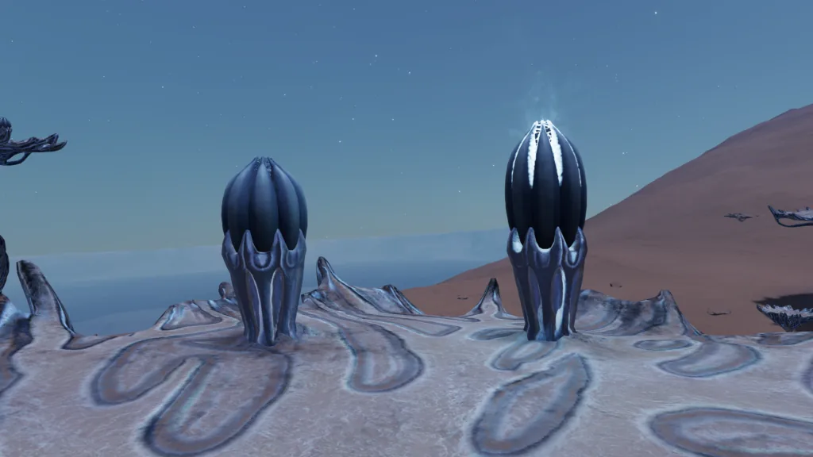
The amount of Active Pod’s present at any of the Biological Sites depends solely on the size of the site itself, with the Larger sites having over five times the amount of Active Pods than a Smaller site would have.
| Site Size | Number of Active Pods |
|---|---|
| Small | 22 |
| Medium | 53 |
| Large | 127 |
Data is correct as of 3rd April 3312.
Active Seed Pod’s are relatively fragile and easy to destroy, taking 4 shot’s from a Grade 1 Karma P-15 Pistol, or just a single shot from a Manticore Tormentor Pistol.
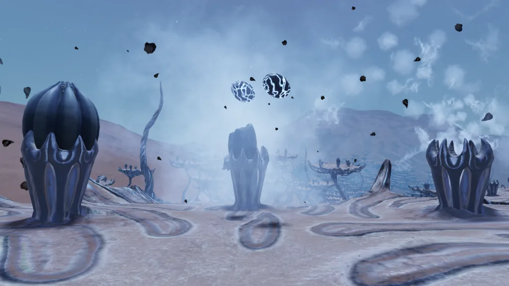
After a Seed Pod is destroyed, it will usually eject between 1-3 Seed’s, along with the some debris from the destroyed pod.
Note: Caution should be taken to avoid being hit by the ejected debris, as there is a small chance that it may knock an individual off the the platform.
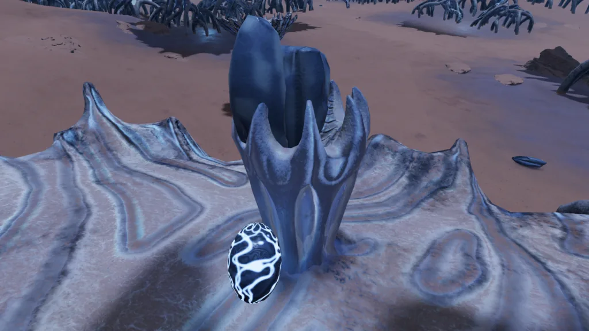
The Unica Seed’s cannot be collected via a SRV’s cargo scoop, and as such require manual collection by a Commander whilst on-foot.
When destroying an Active Pod for the Unica Seed’s, it should be noted that the Seed’s will only survive outside of the Pod for approximately 4 minutes, unless collected and carefully stored.
A seed obtained from the Radicoida Unica organism. It has a tough, thermally insulating outer shell which offers remarkable protection against extreme variances in temperature, radiation and climate.
Image: Item Description: UNICA SEED
There is currently no known use for the Unica Seed’s, however they can be sold to a Station Bartender for 250,000 Credit’s each. Fleet Carrier Bartender’s do not currently have interest in the item, at this time.
Note: As of 2nd April 3312 until 16th April 3312, the Unica Seed’s were requested to be collected for research as part of a Community Goal in the HIP 87621 system.
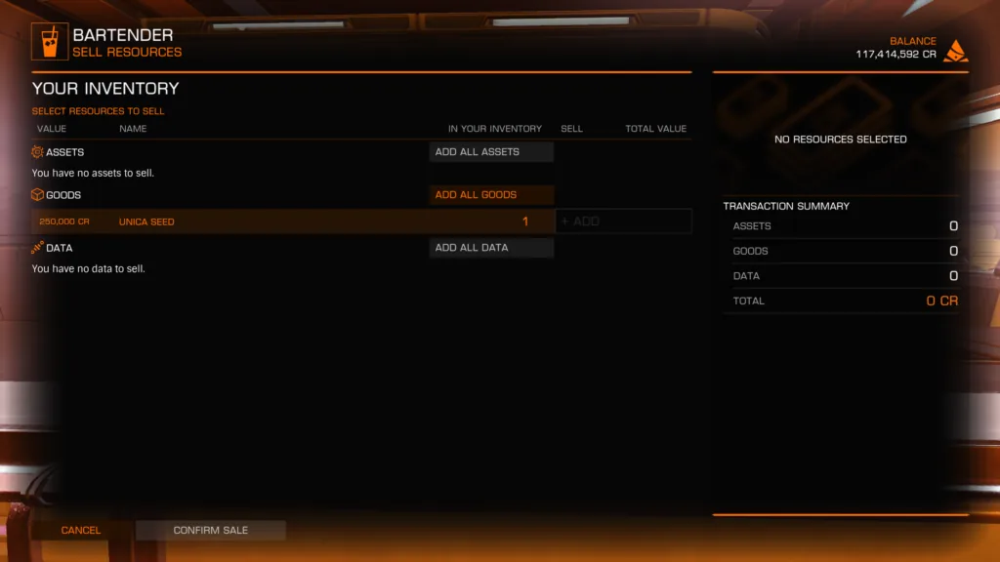
As of 8th September 3312, it has been reported (and confirmed) that Unica Seed Pod’s are no longer present at the Bio Sites.
The exact date of this change is currently unknown, it is also unknown if the sites have entered a dormant state following it’s “active reproductive phase”, or if the Bio Sites have been exhausted.